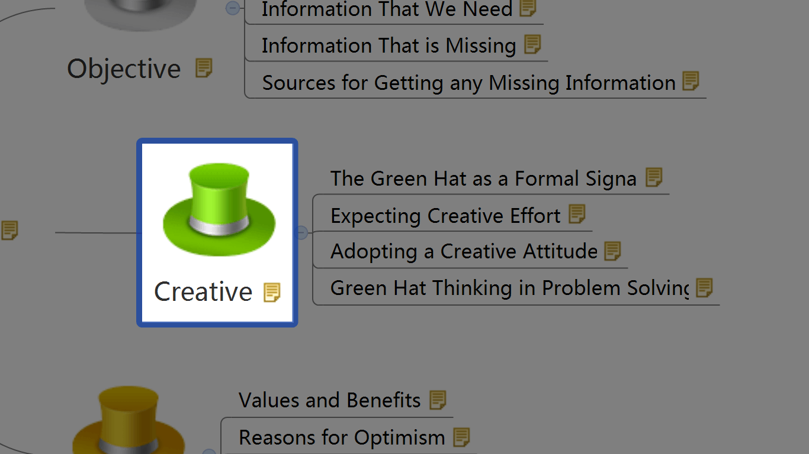
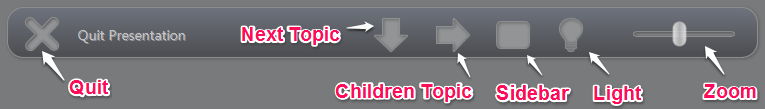
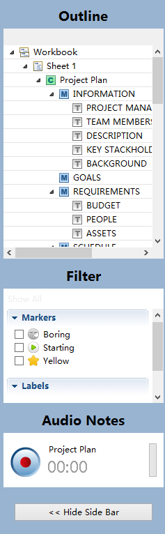

プレゼンテーション
チームワークを促進したり、完了した作業を確認するために、私たちはマインド マップを表示する必要があります。XMind Pro のプレゼンテーションモードは、もう一つの"フルスクリーン"ビューで、気を散らすことなく、マインドマップを閲覧できます。それは、ウィンドウではなく、画面全体に表示されるマップです。この画面表示モードでは、ショートカットキーとホバリング ツールバーを使用し、簡単にマップをナビゲートします。
プレゼンテーションモードに入る 3 つの方法:
- メニューから[表示]→[プレゼンテーションを開始]を選択します。
- ショートカットキーの 'F5' を押します。
- Windows を使用している場合は、"xmind -p xxx.xmind" のように、コマンドラインの引数を指定できます。
-
'Enter'キーと'Tab'キーの使用:
- "Enter"キーを押して、トピックを一つ一つ表示ます。
- "Tab" キーは、 サブトピックを表示します。
-
矢印キーの使用:
- 上下のキーで同じレベルのトピックを移動できます。
- 左右のキーで、親トピックに戻ったり、子供のトピックに移動したりできます。
- 'スペース' キーの使用： すべてのトピックを順番に移動していきます。
-
アウトラインの使用:
- ホバリングツールバーのボタンで、サイドバーを開きます。
- アウトラインのトピックを選択します。
- 選択したトピックは、ハイライトされて画面の中央に移動します。
注:
- 選択したトピックは、自動的に画面中央に移動します。
- 中央のトピックに焦点を当てている場合、キー操作は異なる結果をもたらす可能性があります。
- Enterキー : フローティングトピックがマップにあれば、フローティングトピックに移動します。
- スペースキー : 最初のメイン トピックに移動します。
- 上下キー : メイントピックへ移動します。
- 画面の下部にマウスを移動します。
- 6つのボタンがついた、ホバリング ツールバーのパネルが表示されます。
- プレゼンテーション モード終了 :クリックして、プレゼンテーションモードを終了します。
- 次の主題へ移動：クリックして、次の兄弟のトピックに移動します。
- 下級の主題へ移動します： クリックして、子供のトピックに移動します。
- サイドバーの表示/非表示 : クリックしてサイドバーを開きます。
- 点灯/消灯 : クリックして、コントラストの強調を解除し、マップ全体を表示します。
- ズーム： ドラッグして、マインドマップをズームします。

プレゼンテーションサイドバー:- ツールバーパネルを使ってサイドバーを開きます。
- サイドバーには、次の 3 つの機能があります。

プレゼンテーションを終了する:- "Esc" キーを押します。
- ツールバーパネルの[プレゼンテーションを終了]をクリックします。